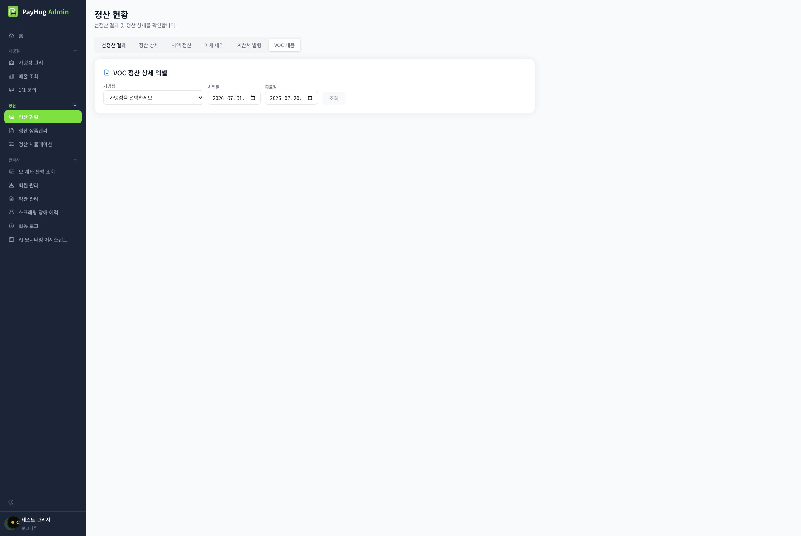

| No | 이름 | 설명 |
|---|---|---|
| 1 | 탭· 제목 | VOC 대응 탭 진입 시 상단 공통 기간 필터 숨김카드 제목 "VOC 정산 상세 엑셀" |
| 2 | 입력 | 가맹점 드롭다운 · 시작일 · 종료일 · [조회]드롭다운 안내문 "가맹점을 선택하세요" · 로딩 중 "가맹점 목록 로딩 중..."승인(계약완료)+사업자번호 있는 가맹점만 목록에 노출 · 옵션 라벨 "가맹점명 (사업자번호)"default : 이달 1일 ~ 오늘 · 가맹점 미선택이면 [조회] 비활성 |
| 3 | 조회 동작 | 상황별 문구미선택 → "가맹점을 선택해주세요."데이터 없음 → "○○의 해당 기간에 정산 내역이 없습니다."실패 → 서버 에러 메시지 · 조회 중 스피너 "조회 중..." |
| 4 | 결과· 다운로드 | 조회 성공 시 파란 박스가맹점명(사업자번호) · 기간 · 배치 N건 · 거래 N건 · 실지급 합계[엑셀 다운로드] · 생성 중 스피너 "생성 중..." · 완료 시 "다운로드가 완료되었습니다." |